- 论文标题：Intuition-Guided Latent Reasoning for LLM-Based Recommendation
- 论文入口：arXiv:2606.27684
- 作者与机构：Chang Liu、Yimeng Bai、Xiaoyan Zhao、Yang Zhang、Qifan Wang、Fuli Feng、Wenge Rong；一作来自 Beihang University，合作机构包括 USTC、CUHK、NUS 与 Meta AI。
- 会议与方向：KDD 2026，LLM-based recommendation、sequential recommendation、latent reasoning。
- 代码状态：论文声明代码开源，已核验公开仓库 Ten-Mao/IntuRec，仓库包含 README、data、model、run_inturec_f1.py、run_inturec_f2.py 等实现文件。
1. 背景和问题
大语言模型进入推荐系统后，常见路线有两类：一类把用户历史、候选物品或物品文本组织成提示词，让模型直接生成下一个可能交互的 item；另一类借鉴推理模型，让模型先在中间状态里“想一想”，再输出推荐结果。IntuRec 讨论的是第二类里的 latent reasoning，也就是不把中间思考显式解码成自然语言 chain-of-thought，而是在连续 hidden space 中逐步更新推理状态。对推荐而言，这个方向很有吸引力：用户兴趣本来就不是一串显式规则，物品文本、用户上下文和下一跳偏好之间存在大量语义相似但不完全可见的关系；如果潜空间推理能在少量 step 内逼近目标物品语义，它比冗长文本推理更适合低延迟推荐链路。
论文指出，现有 latent reasoning 推荐方法虽然提高了“推理深度”，但很多方法主要监督最终推荐输出，推理过程本身尤其是第一个 latent state 缺少约束。第一个状态一旦落在与目标物品嵌入不一致的区域，后续自回归更新就容易沿着错误轨迹继续走，即使最后有 next-token loss 纠偏，也可能已经进入不相关或次优的推理盆地。这也是 IntuRec 把问题聚焦到 reasoning start point 的原因：它不是简单问“LLM 是否会推理”，而是问推荐任务中的潜推理应该从哪里出发。
现有潜推理推荐方法常从无约束推理点开始，隐藏表示与目标物品嵌入错位，导致推理轨迹被带向无关或次优区域。
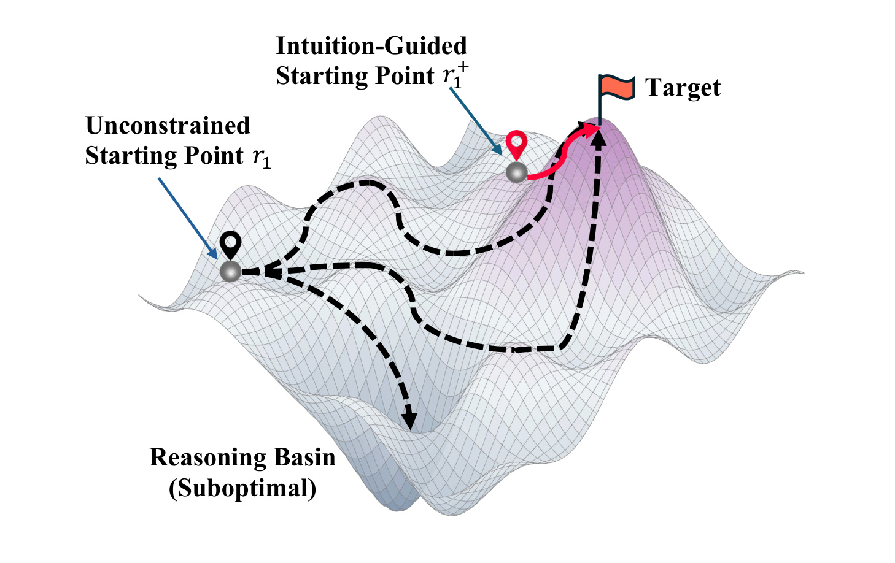
Figure 1 用一个偏几何化的图说明论文的核心诊断。黑色的 unconstrained starting point 位于偏离 target 的区域，后续虚线轨迹虽然也在搜索，但先进入了 suboptimal reasoning basin；红色的 intuition-guided starting point 则更靠近目标所在的高地。这里的“高地”不是论文实际训练中的损失面，而是用来解释 latent reasoning 初始化的语义位置：如果第一步 hidden representation 已经与用户真实偏好或目标 item embedding 有较好对齐，后续少量推理 step 更可能在正确局部区域内细化，而不是先花计算去纠偏。这个图也提示 IntuRec 的贡献点并不在增加更多推理步数，而在给第一步推理提供一个有推荐含义的先验。
IntuRec 借用了认知神经科学里的“intuition”类比：人在复杂问题上往往不是从完全无约束的理性搜索开始，而是先形成一个粗粒度的方向感，再在这个方向附近展开更细的推理。映射到推荐系统，用户历史经过一个 LLM recommender 后得到的 top-K 候选列表，就可以被看成模型自身对偏好的初始判断。这个候选列表不一定包含真实目标，甚至如果直接把目标放进去过多还会形成 shortcut learning；但它包含了与用户近期兴趣相邻的一组 item 模式，可以作为“推荐直觉”的来源。
这篇论文的关键视角是：top-K candidate set 不只是召回结果，也不是简单拼到 prompt 里的额外上下文，而是应该被编码成一个 preference-aligned intuition embedding，并直接替换或引导 latent reasoning 的第一个状态。这样做有两个潜在好处。第一，它把推荐系统中已有的候选生成能力转化为 LLM 推理的结构化先验，避免 LLM 在连续空间中盲目搜索。第二，它避免把候选列表作为同质文本追加到用户历史后面，因为那样模型仍然要在 token 序列中自己学会候选与历史的关系，信号路径更长，也更容易被原始历史淹没。
从工程角度看，这个问题与工业推荐里的多阶段系统也有相似处：召回阶段通常给排序或重排提供候选分布，排序模型不会从全库随机寻找目标。IntuRec 把类似思想放进 LLM-based recommendation 的 latent reasoning 里：先让一个已经适配推荐任务的 LLM 生成候选，再把候选压缩成一个潜空间起点，让后续推理在候选所表达的偏好子空间中进行。论文后面的实验主要围绕这个判断展开：如果 top-K 直觉来源、TACB、IDAE attention 或 BPR 式对齐损失被移除，性能会怎样变化；如果可视化这些起点，它们是否真的更靠近 target embedding；如果增加候选数量或推理步数，收益是否持续上升。
2. 方法
2.1 从无约束潜推理到直觉起点
论文先把普通 LLM 推荐和 latent reasoning 推荐形式化。直接生成式推荐可以写成：
符号解释：$x$ 是由用户历史交互 $h$ 转成的文本提示，$\hat{y}$ 是模型生成的下一个 item。这个形式把推荐任务完全交给 LLM 的下一 token 预测能力，优点是简单，缺点是没有显式中间推理状态。
latent reasoning 则引入中间状态 $\mathbf{r}$：
符号解释：$\mathbf{r}=\{\mathbf{r}_n\}_{n=1}^{N}$ 表示 $N$ 个潜推理状态，每个 $\mathbf{r}_n$ 是连续 hidden representation。原始 latent reasoning 中，第一个状态由输入提示的最后位置输出产生，后续状态自回归更新：
符号解释：$[-1]$ 表示取最后位置 hidden state，$N$ 是潜推理步数。IntuRec 认为这个式子的问题在于 $\mathbf{r}_1$ 没有推荐先验约束，它只是从 prompt 末端自然产生的隐藏向量；如果这个向量和目标 item embedding 方向不一致，后续 $\mathbf{r}_n$ 会继承偏差。IntuRec 的核心机制就是把 $\mathbf{r}_1$ 改造成由候选列表引导的 $\mathbf{r}_1^+$，让 latent reasoning 从 preference-aligned 的位置开始。
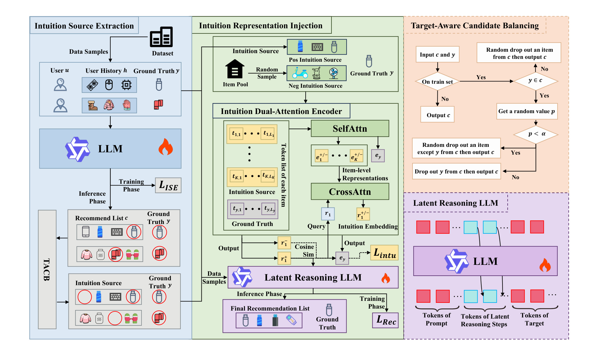
Figure 2 是整篇论文的方法地图。左侧蓝色区域是 Intuition Source Extraction：数据样本输入 LLM，训练阶段优化 $\mathcal{L}_{\mathrm{ISE}}$，推理阶段产生候选推荐列表，并通过 TACB 形成 intuition source。中间绿色区域是 Intuition Representation Injection：候选 item 的 token list 先进入 Intuition Dual-Attention Encoder，经过 SelfAttn 得到 item-level representations，再用 CrossAttn 与 query $\mathbf{r}_1$ 交互，输出 intuition embedding $\mathbf{r}_1^+$。右上角橙色区域单独展开 TACB 的分支逻辑，右下角紫色区域说明 latent reasoning LLM 在训练和推理时如何使用这些 token 与 latent states。图里最重要的连接是：候选集不是作为普通文本挂在 prompt 后面，而是经 IDAE 后直接影响 latent reasoning 的第一步。
2.2 ISE：候选集成为推荐直觉来源
Intuition Source Extraction 阶段先训练一个 LLM-based recommender 做标准 sequential recommendation。训练实例是 $(u,h,y)$，其中 $u$ 是用户，$h$ 是历史交互，$y$ 是下一个真实交互 item。用户历史被转成提示 $x$，目标 item 文本被当作输出 token 序列，训练目标为 next-token loss：
符号解释：$y_i$ 是目标 item 文本的第 $i$ 个 token，$y_{<i}$ 是它之前的 token，$\theta$ 是 LLM recommender 参数。这个阶段得到的模型不是最终 IntuRec，而是用来生成 top-K candidate set。论文用 beam search 为每个样本生成正向候选 $c^+=\{c_k^+\}_{k=1}^{K}$，同时随机采样形成负候选 $c^-=\{c_k^-\}_{k=1}^{K}$，把原始样本扩展成 $(u,h,c^+,c^-,y)$，供第二阶段使用。
这里有一个方法选择很重要：候选列表也可以来自 SASRec 这类传统推荐模型，但论文主方法让同一个 LLM recommender 生成候选，原因是它和后续 latent reasoning LLM 的表示空间更一致。换句话说，IntuRec 的“直觉”不是外部召回器硬塞进来的偏好，而是 LLM recommender 自己在第一阶段形成的 self-intuition。这个选择后来在附录 Table 6 中被验证：用 SASRec 候选也有提升，但不如 LLM 自身候选。
2.3 TACB：约束目标出现比例
top-K 候选集可能包含真实目标 item。包含目标当然能提供强监督，但比例过高会让第二阶段学到投机路径：只要从候选中找到目标，模型就不必学习更一般的偏好结构。比例过低又会让候选集太弱，无法提供足够清晰的方向。TACB 的作用就是把训练集里“目标出现在候选中”的比例调到与验证集观察到的比例一致。
论文先用 beam search 生成 top-$(K+1)$ 候选。如果候选中没有目标 $y$，随机删掉一个 item，得到大小为 $K$ 的候选集；如果候选中包含 $y$，以概率 $\alpha$ 保留 $y$ 并删除其他一个候选，以概率 $1-\alpha$ 删除 $y$ 并再删一个其他候选。$\alpha$ 的设定是：
符号解释：$\beta_{\mathrm{train}}$ 是训练样本 top-$(K+1)$ 候选自然包含目标的比例，$\beta_{\mathrm{valid}}$ 是验证样本 top-K 候选包含目标的比例。这个式子的含义不是追求候选集里目标越多越好，而是让调整后的训练曝光分布接近验证口径，降低候选操纵带来的 distribution shift。如果没有 TACB，模型可能把“目标是否直接出现”当作捷径，而不是学习候选集表达的偏好方向。
2.4 IRI/IDAE：把候选列表压成起点嵌入
Intuition Representation Injection 阶段把 top-K 候选集转成 intuition embedding。直观上，最朴素的方法是把候选 item 文本直接拼进 prompt；但论文认为这样做信号太间接，因为候选文本和用户历史文本同质，模型仍需要从 token 序列中自己判断哪些候选更重要。IntuRec 改为用一个函数 $f(\cdot)$ 将候选集与原始 $\mathbf{r}_1$ 结合：
符号解释：$c^+$ 是 top-K 正候选，$f$ 是 intuition encoder，$\mathbf{r}_1^+$ 是由候选集引导后的起点状态。这个式子把原始无约束的 $\mathbf{r}_1$ 替换为 preference-aligned 的 $\mathbf{r}_1^+$，从而把“推荐直觉”注入后续 latent reasoning。
IDAE 先对每个候选 item 内部的 token embeddings 做 self-attention，再取最后位置作为 item-level representation：
符号解释：$\mathbf{t}_{k,l}$ 是第 $k$ 个候选 item 的第 $l$ 个 token embedding，$L_k$ 是该 item 的 token 长度，$\mathbf{e}_k^+$ 是候选 item 级表示。self-attention 的作用是先在 item 内部整合 title 或描述 token，避免直接对零散 token 做候选级聚合。
随后，IDAE 以原始 $\mathbf{r}_1$ 为 query，以候选 item 表示集合为 key/value 做 cross-attention：
符号解释：$Q$ 是原始起点，$K,V$ 是 top-K 候选 item 表示。cross-attention 让候选集不是平均进入模型，而是根据当前用户历史形成的起点来选择和加权。Table 3 的消融也显示，去掉 CrossAttn 的下降比去掉 SelfAttn 更明显，说明“候选与当前 query 的交互”比单纯 item 内部编码更关键。
2.5 训练目标：推荐损失与直觉对齐损失
第二阶段训练时，IntuRec 仍然需要预测目标 item token，因此保留推荐损失：
符号解释：$\mathbf{r}^+=\{\mathbf{r}_1^+,\mathbf{r}_2,\dots,\mathbf{r}_N\}$ 是包含推荐直觉起点的 latent trajectory。这个损失保证最终生成仍然对齐目标 item。
但只靠 $\mathcal{L}_{\mathrm{rec}}$ 还不够，因为 IDAE 可能学到结构上可用但语义上偏离目标的候选嵌入。论文额外构造目标 item 表示：
符号解释：$\mathbf{t}_{y,l}$ 是目标 item 的 token embedding，$\mathbf{e}_y$ 是目标 item 的 item-level embedding。负向 latent state $\mathbf{r}_1^-$ 则由随机候选 $c^-$ 经同样 IDAE 过程得到。
直觉对齐损失使用 BPR 风格，让正直觉起点比负直觉起点更接近目标 item：
符号解释：$\sigma$ 是 sigmoid，$\mathrm{sim}$ 是 cosine similarity，$\mathbf{r}_1^+$ 来自正候选，$\mathbf{r}_1^-$ 来自负候选。这个损失把 intuition embedding 从“候选集的摘要”进一步约束为“更接近目标偏好的起点”。
最终第二阶段目标为：
符号解释：$\lambda$ 控制推荐生成损失和直觉对齐损失之间的权重。训练流程上，IntuRec 先完成 ISE 训练并离线生成 $c^+$、$c^-$，再在 IRI 阶段联合更新 LLM 与 IDAE。推理时不需要再学习目标 item 表示，只需要用 top-K 候选生成 $\mathbf{r}_1^+$ 并完成 latent reasoning。这个两阶段设计把“候选生成”和“直觉注入”拆开，减少了端到端直接从零学习候选先验的难度。
3. 实验结果
论文的主实验使用 Amazon Review 的 CDs、Toys、Games 三个子集，先做 5-core filtering，再用固定结束时间 2018 年 10 月的动态时间窗口构造序列推荐数据。训练、验证、测试比例是 8:1:1，用户序列被截断或 padding 到长度 10。LLM-based baseline 统一使用 Qwen2.5-1.5B 作为 backbone，评价指标是 Recall@5、Recall@10、NDCG@5、NDCG@10；LLM 生成时使用 beam size 10 并截断到对应 K，同时使用 constrained decoding 缓解 hallucination。这个设置说明论文并不是比较一个孤立模型，而是在传统序列推荐、直接 LLM 推荐、BIGRec/D3、LatentR3 与 IntuRec 之间做系统对照。
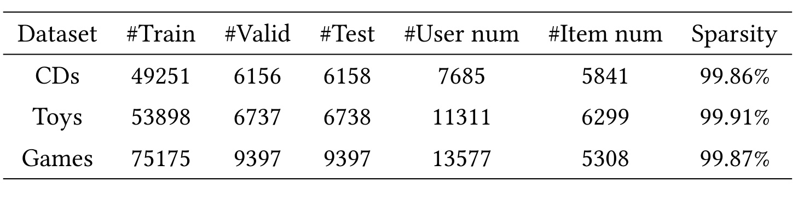
Table 1 显示三个主实验数据集都非常稀疏：CDs 有 7,685 个用户、5,841 个 item，sparsity 为 99.86%；Toys 有 11,311 个用户、6,299 个 item，sparsity 为 99.91%；Games 有 13,577 个用户、5,308 个 item，sparsity 为 99.87%。这种高稀疏场景对 LLM 推荐有代表性，因为用户历史较短且 item 文本语义重要，传统 ID-based 方法只依赖交互矩阵会受到限制。另一方面，高稀疏也意味着候选集质量和目标出现比例更敏感，TACB 的存在不是细枝末节，而是防止候选先验变成目标泄漏或无效噪声的必要控制。表里三组数据的 item 数都超过 5,000，说明作者不是在极小闭集上验证候选注入；每个用户序列又被截断到最近 10 次交互，因此 IntuRec 的直觉来源必须在较短历史和较大候选空间之间补足语义方向。
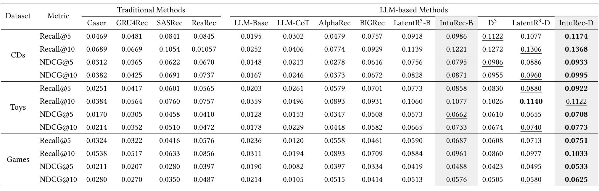
Table 2 是效果主证据。整体看，IntuRec-B 相比 BIGRec 和 LatentR3-B 在三组数据集上都有提升，IntuRec-D 相比 D3 和 LatentR3-D 也基本达到最好或接近最好。以 CDs 为例，BIGRec 的 Recall@5 是 0.0757，LatentR3-B 是 0.0918，IntuRec-B 提升到 0.0986；在 D3 这条 backbone 上，D3 的 Recall@5 是 0.1122，LatentR3-D 是 0.1077，而 IntuRec-D 达到 0.1174。Toys 上 IntuRec-D 的 Recall@5 为 0.0922、NDCG@5 为 0.0708，均为表内最佳；Games 上 IntuRec-D 的 Recall@10 达到 0.1033、NDCG@10 达到 0.0625，也优于对应 baseline。这个结果说明，推荐直觉不是只在弱 backbone 上补救，而是在 BIGRec 和 D3 两种 LLM-based recommender 上都能作为可叠加模块提供增益。
还需要注意 Table 2 中传统方法和 LLM 方法的关系。SASRec、ReaRec 等传统序列模型在部分指标上不弱，尤其 CDs 上 ReaRec Recall@5 已到 0.0845；但 LLM-based 方法通过 item 文本和 world knowledge 能在多个数据集上取得更高上限。LatentR3 的加入通常能提升 BIGRec/D3，说明 latent reasoning 本身有价值；IntuRec 再进一步提升，则说明论文关注的不是“要不要推理”，而是“推理从哪个 hidden state 出发”。对推荐链路而言，这个区别很关键：增加推理步数会带来延迟，而改进起点有可能在较小额外推理成本下获得收益。
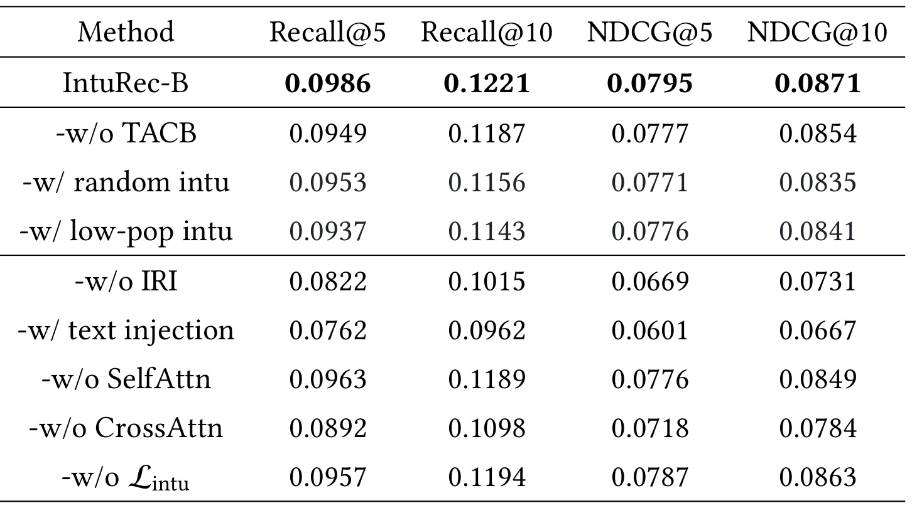
Table 3 的消融最能解释 IntuRec 的设计必要性。完整 IntuRec-B 在 CDs 上 Recall@5 为 0.0986、Recall@10 为 0.1221、NDCG@5 为 0.0795、NDCG@10 为 0.0871。去掉 TACB 后 Recall@5 降到 0.0949，说明目标出现比例控制确实影响训练分布；把正向候选换成 random intuition 或 low-pop intuition 后也下降到 0.0953 和 0.0937，说明 top-K 候选不是任意 item 列表，而必须包含与用户偏好接近的模式。更大的下降发生在 IRI 相关设计：w/o IRI 的 Recall@5 只有 0.0822，text injection 更低到 0.0762，说明简单把候选文本拼到 prompt 里不如显式嵌入注入。w/o CrossAttn 的 Recall@5 降到 0.0892，明显低于 w/o SelfAttn 的 0.0963，表明候选与原始起点之间的 query-conditioned 聚合是 IDAE 的关键。
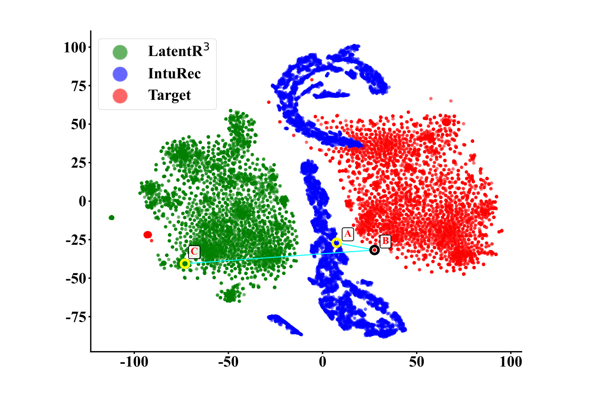
Figure 3 给出 embedding space 的直观证据。绿色 LatentR3 起点分布集中在左侧，红色 target item 分布在右侧，蓝色 IntuRec 起点呈带状或流形状分布并靠近 target 区域。图中的示例点 A/B/C 表达了论文的主张：IntuRec 点 A 比 LatentR3 的点 C 更接近目标点 B。作者进一步解释，这种各向异性的蓝色分布可能来自 BPR 式 cosine contrastive objective 和推荐偏好方向的选择性约束。也就是说，IntuRec 不是把起点均匀推向整个空间，而是把它压到一组与用户行为相关的局部 preference manifold 上，这和“推荐直觉”作为方向先验的解释一致。更细看这张图，蓝色点并没有完全覆盖红色目标分布，而是在目标簇附近形成几条弯曲带，这意味着 IDAE 学到的是可引导推理的局部方向，不是直接把目标 item embedding 复制到起点；这也能解释为什么 Table 3 中去掉 BPR 对齐损失仍有一定性能但会下降。
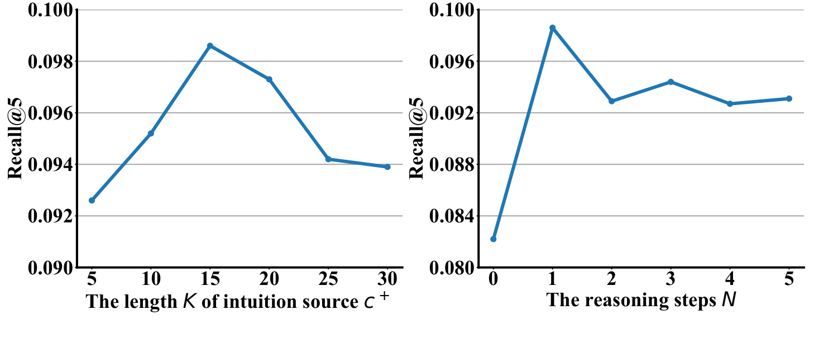
Figure 4 显示两个有工程含义的趋势。左图中 K 从 5 增加到 15 时 Recall@5 上升，随后在 20、25、30 逐步下降。论文解释为：小 K 时候选多样性不足，扩大候选集能更好逼近真实偏好；但 K 过大后，LLM decoding bias 和候选重复/同质化会增强，直觉来源不再提供额外探索价值，甚至会让模型过度强调特定 item 模式。右图中 N 在 1 时达到峰值，之后增加到 2、3、4、5 并没有持续提升。这一点很重要，因为 IntuRec 的目标不是让模型多想几步，而是让第一步就站在更合理的位置；当起点足够好时，更多 latent reasoning step 反而可能引入累积不一致和额外成本。
论文还在附录增加了 Instruments 和 Books 两个数据集，用来检查效果是否只存在于主文三个 Amazon 子集。附录数据集同样稀疏，但规模差异明显：Books 的训练样本、用户数和 item 数远大于 Instruments。
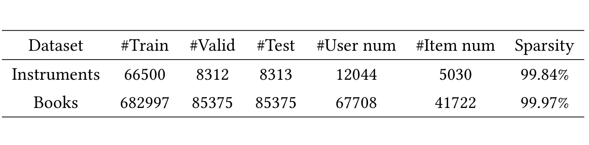
Table 4 显示 Instruments 有 66,500 条训练样本、12,044 个用户、5,030 个 item，sparsity 为 99.84%；Books 有 682,997 条训练样本、67,708 个用户、41,722 个 item，sparsity 为 99.97%。Books 的规模远大于主文三个子集，这使附录实验能部分检验 IntuRec 在更大 item space 下是否还能维持候选直觉的作用。不过论文没有给出更大工业数据或在线实验，因此这里更像离线泛化补充，而不是完整生产级规模验证。这里还要注意，Books 的 item 数约为主文数据集的 7 到 8 倍，候选列表若仍保持相近 K 值，就会面对更强的长尾和相似书名干扰；因此后续 Table 5 中 Books 增益较小，应结合这个规模差异理解，而不是简单判定方法失效。
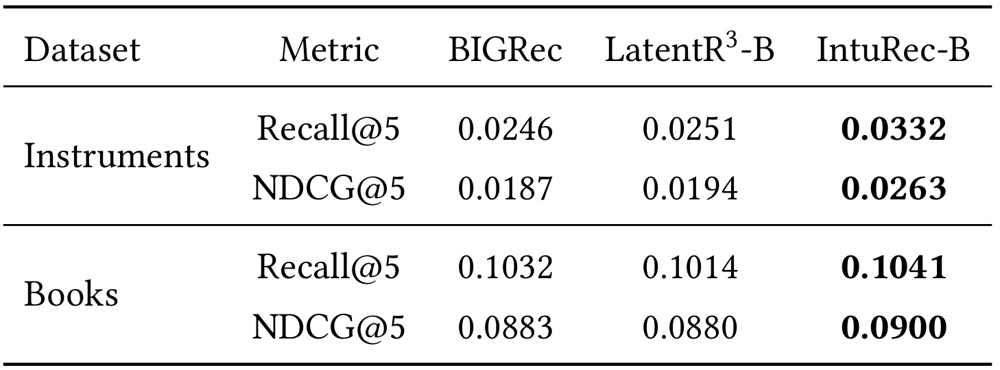
Table 5 中，IntuRec-B 在 Instruments 的 Recall@5 为 0.0332，高于 BIGRec 的 0.0246 和 LatentR3-B 的 0.0251；NDCG@5 为 0.0263，也明显高于两个 baseline。Books 上提升较小但仍为最好：Recall@5 为 0.1041，NDCG@5 为 0.0900。这个结果支持 IntuRec 的泛化性，但也暴露了一个值得继续追问的点：当数据规模更大、候选空间更复杂时，收益幅度不一定稳定放大。原因可能是 Books 数据本身更大，BIGRec 已经从文本语义和更多交互中受益，候选直觉的边际收益变小；也可能是 K、N、TACB 比例仍按相对简单的搜索范围调参，未充分针对大规模 item space 优化。
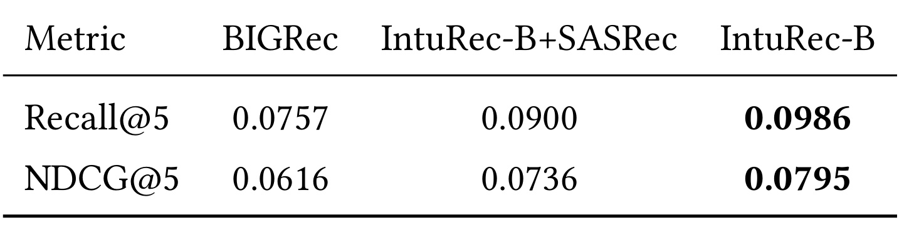
Table 6 直接检验 IntuRec 是否依赖 LLM 自身生成候选。BIGRec 的 Recall@5 为 0.0757，IntuRec-B+SASRec 提升到 0.0900，但完整 IntuRec-B 进一步达到 0.0986；NDCG@5 也从 0.0616 到 0.0736，再到 0.0795。这个结果说明传统推荐模型生成的候选也能作为偏好先验，证明“候选集直觉”这个想法有一定通用性；但 LLM recommender 自身候选与后续 latent reasoning 的表示空间更匹配，因此效果更好。对实际系统来说，这里提供了两个落地选项：如果已有强召回模型，SASRec 类候选可作为低成本近似；如果追求最高效果，则需要让候选来源和 LLM 推荐模块更紧密对齐。
附录 Table 7 没有作为截图放入笔记，因为该表由长 item title 列表组成，单对象裁剪会被当前质量规则识别为正文段落风险。但它的案例结论值得保留：用户历史包含多张 Beatles 专辑，候选列表虽然没有精确包含目标 With the Beatles，却包含 Abbey Road、Beatles for Sale、Magical Mystery Tour、Meet the Beatles 等强相关专辑；最终推荐列表把 With the Beatles 排到第二位。这说明 IntuRec 不是简单从候选中复制答案，而是把候选中表达的风格、乐队、年代和专辑关联转成偏好方向，再通过 latent reasoning 命中未直接出现的目标 item。这个案例比主结果表更能说明“推荐直觉”不是 target leakage 的同义词。
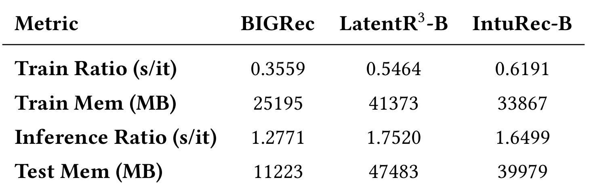
Table 8 展示成本侧的权衡。BIGRec 的训练单步耗时为 0.3559 s/it，LatentR3-B 为 0.5464，IntuRec-B 为 0.6191，说明 IntuRec 由于要使用最终层 hidden states 和 IDAE 反传，训练更慢。显存上，IntuRec-B 训练显存 33,867 MB，低于 LatentR3-B 的 41,373 MB，但高于 BIGRec 的 25,195 MB。推理时，IntuRec-B 为 1.6499 s/it，快于 LatentR3-B 的 1.7520；测试显存 39,979 MB，也低于 LatentR3-B 的 47,483 MB。作者的解释是 LatentR3-B 需要在每个 autoregressive step 处理额外模块，而 IntuRec-B 主要在第一步聚合 intuition。结合 Figure 4 中 N=1 最优的发现，IntuRec 的优势更像“前置对齐”而不是“增加推理深度”。
综合实验看，IntuRec 的证据链比较完整：Table 2 证明效果提升，Table 3 证明关键组件不能随意删，Figure 3 证明起点嵌入更靠近目标，Figure 4 说明候选数量和推理步数存在合理范围，Tables 4-6 补充泛化与候选来源，Table 8 给出成本。它的主要不足是所有实验仍是离线序列推荐数据集，且 backbone 使用 Qwen2.5-1.5B，没有展示更大模型、真实召回-排序链路、在线 A/B 或长期兴趣建模场景。论文提到 OnePiece 等工业 latent reasoning 方向，但 IntuRec 自身还没有给出在线业务指标，因此目前更适合看作一个清晰的 LLM4Rec latent reasoning 模块，而不是已验证的完整工业系统。
4. 总结
IntuRec 的核心贡献可以概括为一句话：把 LLM recommender 自己生成的 top-K 候选列表从“输出候选”提升为“潜推理起点先验”。它没有把候选文本简单拼进 prompt，也没有依赖更多推理步数，而是通过 ISE 生成 self-intuition，通过 TACB 控制目标出现比例，通过 IDAE 将候选 token 表示压缩成 $\mathbf{r}_1^+$，再用 BPR 式 $\mathcal{L}_{\mathrm{intu}}$ 约束这个起点更接近目标 item embedding。这个设计与推荐系统的多阶段思想兼容：召回或候选生成不只是候选列表，而可以成为下游推理模型的空间方向。
我认为这篇论文最有价值的地方在于把 latent reasoning 的问题落到了一个可测的局部变量：start point alignment。很多 LLM 推理论文会笼统强调“让模型思考”，但推荐任务的输出空间是 item，用户偏好也常被 item embedding 或 item text 表示约束。IntuRec 的可解释性来自三层证据：第一，公式上明确替换 $\mathbf{r}_1$ 为 $\mathbf{r}_1^+$；第二，消融显示 text injection、w/o IRI、w/o CrossAttn 都会明显掉点；第三，可视化显示 IntuRec 起点分布更接近 target。即使读者不接受“认知直觉”的类比，也可以把它理解成 candidate-conditioned latent initialization。
局限也比较明确。第一，候选集由同一 LLM recommender 离线生成，训练和推理链路会增加工程复杂度，尤其要管理候选缓存、TACB 比例和更新频率。第二，TACB 依赖验证集目标包含比例，线上分布变化时 $\alpha$ 是否稳定需要持续监控。第三，Table 6 表明外部 SASRec 候选有效但不如自生成候选，这意味着如果接入已有工业召回系统，表示空间错位可能削弱收益。第四，实验没有覆盖更长用户历史、多模态 item、实时召回、在线探索或多目标推荐，因此不能直接推断它在大规模生产链路中的收益。
后续跟进可以从三个方向做。第一，复现实验时优先检查候选生成质量和目标包含比例，而不是只调 IDAE 参数；如果 c+ 本身同质化或泄漏严重，后续 attention 很难补救。第二，把 IntuRec 与工业候选生成器结合时，需要增加候选来源对齐实验，例如不同召回塔、item text encoder、LLM self-candidate 的混合权重。第三，在线部署要重点衡量第一步 intuition aggregation 的延迟、显存和缓存策略，因为论文显示 N=1 最优，真正的成本关键不在多步推理，而在候选直觉能否稳定、低延迟地产生并注入。
总体上，IntuRec 是一篇问题定义清楚、实验链条比较完整的 LLM-based recommendation 论文。它给推荐系统里的 latent reasoning 提供了一个更具体的操作点：不要让推理从无约束 hidden state 开始，而要用与用户偏好相邻的候选集合为第一步定位。对于关注 LLM4Rec、生成式推荐、序列推荐和搜索推荐一体化的人，这篇论文值得重点看方法部分和消融表；对于工程落地，最值得验证的是候选来源、TACB 稳定性、外部召回兼容性和推理端第一步注入成本。